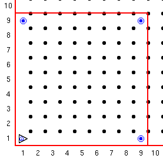

Je kent al het als commando. Je gebruikt het om een keuze te maken
zoals in als naast een pieper, pak het op.
Soms wil je ingewikkeldere keuzes maken. Guido houd van appeltaat maar zijn moeder
heeft die niet altijd, ze heeft wel altijd koekjes. Hij wil dus een uitdrukking (statement)
als: "Mam, ik wil een stuk appeltaart, maar als je die niet heb, dan wil ik een koekje"
Je kunt de als...dan... uitdrukking gebruiken voor dit soort
twee-weg keuze uitdrukkingen.
Het is net zo als de als uitdrukking maar we voegen er een dan
stuk aan toe zodat er een andere actie plaats vind als de anders
uitdrukking niet waar is.
De vorm van deze conditionele uitdrukking met een anders conditie is:
als test-conditie:
instructie
anders:
andere-instructie
instructie kan een simpel commando zijn als beweeg
of een blok commando's. Code om een pieper te pakken of anders door te lopen
kan geschreven worden als:
als_naast_een_pieper:
pak_pieper
beweeg
anders:
beweeg
Onthou dat anders niet altijd nodig is, gebruik het alleen als het zinvol is.
Opdracht:
In deze opdracht gaat Guido een afgesloten wereld rond. Hij weet niet de afmetingen van de wereld. Wat hij wel weet is dat er op elke hoek een pieper staat behalve op de hoek waar hij begint.
Guido start links onder richting het Oosten. Als hij niet naast een pieper staat beweegt hij voorwaarts anders pakt hij de pieper, gaat linksaf en beweegt.
Creeer een wereld die in 32 stappen is rond te gaan. Plaats piepers in de drie hoeken. Gebruik nu een doe commando (32 keer) en een als...dan commando om de wereld rond te gaan.
Je wereld moet er ongeveer zo uit zien.

Deze serie Guido van Robot lessen zijn geschreven door
Roger Frank.
Commentaar and suggesties over deze lessen kunnen gestuurd worden naar
Stas Zytkiewicz die de lessen
vertaalde naar het Nederlands.
De orginele lessen zijn te vinden op de
Guido van Robot website.
Copyright
© 2003 Jeffrey Elkner.
© 2007 Stas Zytkiewicz.